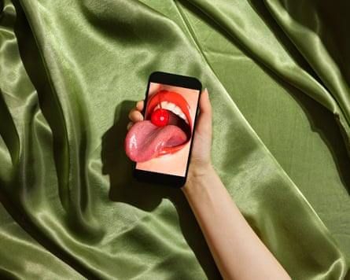

Sex = penetration
Asked to define sex, most people will say it means penetration and anything else is just “foreplay”, explains Kate Moyle, a psychosexual and relationship therapist , and author of The Science of Sex . “This pedestals intercourse as ‘real sex’ and other sexual acts as something done before penetration rather than as deserving credit in their own right,” she says.
Lesbian, bisexual and gay people tend to have a broader definition. Sex education historically revolved around reproduction (therefore penetration), which is just one of hundreds of reasons people have sex.
If you think of penetration as the sex you “should” be having, you might be missing out on the sex you genuinely enjoy. Whether you’re in a penetration rut or tend to have sex the same way, challenge your idea of what intercourse means: “Whenever you have sex, change one small thing – lights on/off, starting with your clothes on/off, a different position, or agreeing not to have penetrative sex,” Moyle suggests. “Novelty can be a real boost for our sex lives.”
If your partner doesn’t get an erection or get wet, they’re not attracted to you
“Our culture treats the body like a lie detector test,” says Dr Emily Jamea, a sex and relationship therapist and author of Anatomy of Desire : Five Secrets to Create Connection and Cultivate Passion. We’re fed the idea that arousal is instant, automatic and visible, “but bodies are not machines, and things like stress, medications, trauma, hormones or feeling pressured to perform can affect its response”, she adds.
As psychosexual and relationship therapist James Earl puts it: mind and body don’t always play nice. “Men sometimes get an erection without being turned on, just like women may lubricate without feeling desire. The reverse is also true: you can feel aroused without the physical manifestation,” he explains.
Try not to take the absence of a partner’s erection or wetness as a personal rejection. “It may signal that someone needs a bit more time, safety or stimulation,” Jamea says. “Slow things down, check in and focus on what feels good, not just what ‘should’ be happening in the moment,” she adds.
Photograph: Kellie French/The Guardian. Makeup by Sarah Cherry using Givenchy Beauty. Model: Alex G at Hired Hands
Porn ruins your sex life
Experts are divided on the impact porn has on our sex lives, and even how addictive it really is. “Some people may watch porn compulsively, but it’s not because porn is addictive,” says Silva Neves, a psychosexual psychotherapist and author . “It’s often because they have other underlying emotional difficulties (most often depression) that they’re trying to soothe.”
But Alex Warden, a lead therapist at the Priory hospital, Chelmsford, who supports an increasing number of patients being referred to him with pornography addiction, says compulsive viewing can damage a relationship if taken to extremes. “Partners usually feel betrayed and hurt, which can result in a breakdown of communication and intimacy. This tends to be wrapped up in a lot of confusion, shame and a host of mental health issues,” he says.
However, Neves points out: “Porn is not a monolith. There are multiple types of porn, some undesirable and misogynistic, and some very good ethical types.”
If you are an avid viewer, he adds, it’s best to be as open as possible and choose a partner who has similar values around it: “Make sure you watch it in a way that’s pleasurable, matches your own values and allows you to communicate your porn enjoyment with your partner without shame,” he says.
Only men get sexual performance anxiety
This can affect everyone, regardless of sex or gender. A review of studies conducted across 18 years found up to 25% of men and 16% of women experience performance anxiety.
The symptoms are often more obvious if you have a penis: not being able to get or maintain an erection, and premature ejaculation. With vulvas, it may present as reduced lubrication, pelvic floor tightness, reduced pleasure or inhibited orgasm, Moyle explains.
The anxiety is often rooted in limited, gendered messages we receive about sex. “We feel that if we don’t ‘succeed’, we’ll be judged and shamed; or we believe we’ve failed to meet our partner’s (or our own) expectations,” she says.
If you have performance anxiety and a regular partner, tell them what’s going on and offer a specific suggestion for what could help. “Where we have communication gaps we fill the spaces with assumptions, which often hold a negative bias, but pretending it isn’t happening is likely to worsen the anxiety,” advises Moyle. If a specific sex act or position is making you anxious, put a pause on it. “It’ll give you a chance to refocus your attention on what is working and feeling good,” she adds.
You’re naturally either good or bad at sex
Jamea says sexual skills are something we all have to learn and work at. “I believe we’re born with the fundamentals that we need to be good lovers, but things happen in our lives – we’re influenced by culture or have a negative experience that disconnects us from those innate qualities.”
Good sex isn’t about a talented performance. “It’s about how good a communicator you are, how safe you make your partner feel and how deeply you’re able to connect with them,” she says.
Whether you think you’re good or bad at sex, having a fixed mindset kills experimentation and prevents growth. Jamea says there’s one question you should ask during sex if you want to be truly great: what feels best for you? “That simple question can turn it into a collaborative experience where you’re co-creators and active participants with the shared goal of making it better for everyone.”
Sex stops when you get older
An Age UK study found 54% of men and 31% of women over 70 are still sexually active. Yet “older people are viewed as sexless by our society, media and the medical community”, says Joan Price, an advocate for “ageless sexuality ” and the author of Naked at Our Age : Talking Out Loud About Senior Sex.
“With a spirit of creativity and communication, we can be sexual beings lifelong,” she continues. “Yes, sex changes as we age: we just need to learn to explore new ways of making sexual arousal work for us.”
If what you used to do isn’t physically possible any more, Price suggests taking turns. “Instead of being frustrated that you can’t find one activity that works for both of you, enjoy double the pleasure by giving and receiving separately.” For partnered and solo senior sex, incorporate vibrators into your sex life. “They speed up arousal and are often the difference between orgasm or not.”
Penis size is important
Only 55% of straight men and 62% of gay and bisexual men don’t feel anxious about their penis size. “For men especially, there is the belief that the bigger it is the more pleasurable sex will be,” says intimate health expert Dr Shirin Lakhani. Yet the majority of straight women say they don’t care about penis size, and 85% are happy with what their partner is packing. After all, pleasure comes down to much more than the length of a penis.
If your penis size causes anxiety, share with your sexual partner how you’re feeling. “Even if society has made you feel uncomfortable about discussing penis size, your partner should be understanding and reassuring. There are of course other ways to enjoy sex that don’t focus on penis size,” says Lakhani, who suggests oral sex or using your hands.
People only use sex toys if their partner can’t satisfy them
This myth comes from the belief that sex toys can do things partners can’t, and are therefore “better”.
Think of sex toys as tools, not threats. “They offer something different to partnered sex. The two are not mutually exclusive,” says Moyle. Miranda Christophers, a sex and relationship psychotherapist and clinical director at The Therapy Yard , agrees that they can create different sensations, enhance exploration, add variety and playfulness, boost connection, and help people overcome sexual function issues.
Moyle advises: “If you’re new to sex toys choose a simple vibrator, and trail it all over the body – not just focusing on the parts associated with sex. This can help build anticipation, desire and arousal.”
Only gay men like anal sex
“Heterosexual men tend to believe that anal sex is a ‘gay thing’,” says Neves. “This myth comes from poor sex education and gay male stereotypes, which can contribute to homophobia.”
Anal sex can be enjoyed by anybody, regardless of sex, gender or sexuality. “Numerous heterosexual men enjoy receiving anal sex. It stimulates the prostate (a gland found between the penis and rectum), which can be very pleasurable,” says Neves.
Still, some men feel shame just for being curious about anal sex, and are less likely to seek information on how to practise it safely. “Start slowly, because the lining of the anus is delicate. Access information on douching, and use plenty of lube,” Neves advises. “You can start by trying a sex toy specifically designed for prostate massage to experiment with how it feels for you. Take it one step at a time.”
Your sex drive is either high or low
“The word ‘drive’ is a misnomer,” Jamea says. “It’s better understood as a motivational system that orients us towards pleasure, connection, novelty or emotional closeness.” Sexual desire is a lot more complex than the drive that comes from hunger or thirst. It also isn’t static and can be shaped by context, stress, hormones, relationship dynamics, how much sleep you’ve had and how emotionally safe you feel with a partner.
Jamea suggests trying to think of your sex drive as like a compass that points you towards what helps you feel most alive and connected. “Rather than asking, ‘Am I in the mood right now?’, ask what conditions – individually, relationally or environmentally – could help me feel more open to desire.”